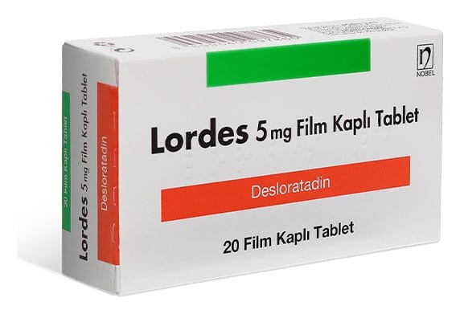

Lordes 5 mg Film Tablet, 30 Adet

Ne için kullanılır
KT · Bölüm 1LORDES, bir antihistaminik ilaç sınıfından desloratadin’i içerir.
LORDES, uyku hali oluşturmayan alerjiye karşı kullanılan bir ilaçtır. Alerjik reaksiyonlar ve alerji belirtilerinin kontrol altına alınmasına yardımcı olur.
LORDES, mavi renkli, bir yüzünde Nobel amblemli, yuvarlak film kaplı tablettir. 10, 20 veya 30 film kaplı tablet içeren ambalajlarda bulunmaktadır.
LORDES alerjik nezle ile ilişkili hapşırık, burunda akıntı ve kaşıntı, damakta kaşınma ve gözlerde kaşınma, kızarıklık veya yaşarma gibi belirtileri (örneğin saman nezlesi, ev tozu akarına karşı alerji) giderir.
LORDES ayrıca ürtiker (alerjiden kaynaklanan bir deri hastalığı) ile birlikte görülen kaşıntı ve derideki kabartı ve kızarıklık gibi belirtilerin ortadan kaldırılmasında kullanılır.
Bu belirtiler tüm gün boyunca giderilmiş olur ve normal günlük aktiviteleriniz ve uykunuza yeniden kavuşmanıza yardımcı olur.